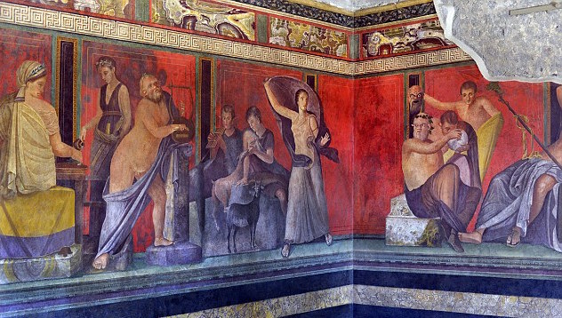
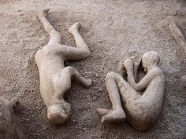

Frozen in Time
- Pompeii was accidentally discovered in 1709 (There are many different dates when it was said to be found)
- Buildings, art, artifacts, and bodies provide a record of everyday life in the ancient civilization
- Pompeii was encapsulated by ash, protecting it from oxygen that would rot the precious items
- Only 2/3 of the city has been unearthed
- Even food and bodies were preserved almost perfectly

One of the best-preserved frescoes recovered from the
ruins of
Pompeii
Protecting What has Been Uncovered
- Weather, tourists, and pollution have combined to damage some of the precious artifacts from Pompeii
- Water has gotten inside the walls, causing them to crumble
- Scientists are creating 3d models of the items on computers to have evidence incase they were to be destroyed
- Scientists also fear another eruption from the deadly Mount Vesuvius could ruin the exploration of Pompeii
that has lasted many hundreds of years

Bodies can still be seen in the positions they
were
in on that fateful morning in 79 A.D.